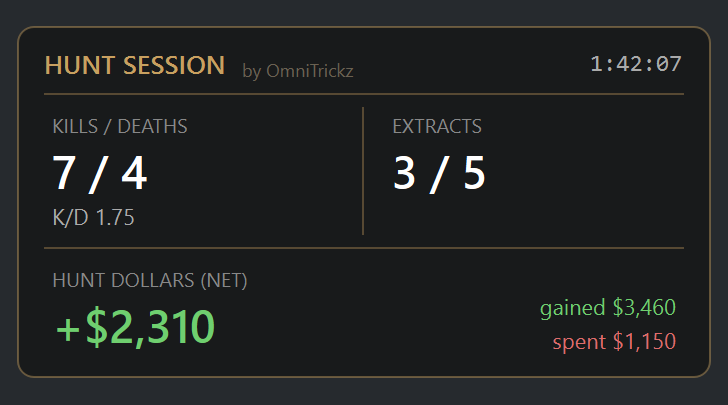

Your session, scored live.
A see-through card in the corner of your screen that keeps count while you play: kills, deaths, extracts and the Hunt Dollars you've made or lost tonight. Clicks go straight through to the game.
Windows 10/11 · Created by OmniTrickz

What it does
No account. Point it at your Hunt folder once and it counts from then on.
Kills, deaths, K/D
Read from your Mission Summary after every match.
Extracts
Matches you made it out of, out of matches played.
Hunt Dollars, net
Gained, spent and your real total, from your lobby balance.
History and charts
Every session saved on your PC. K/D, kills per match and money over 1, 3, 7 or 30 days, or all time.
Stream it with OBS
Add your stats as an OBS Browser Source, on one PC or a separate streaming PC. Built-in setup guide.
Make it yours
Move it, resize it (60-250%), hide the stats you don't want, and fix any number in one click.
How it works
It never touches the game. It only reads what Hunt already writes to your disk and shows on screen.
Follows Hunt's log file
Match starts, deaths and match ends come from the log Hunt writes while you play.
Reads the Mission Summary
Kills and Hunt Dollars are read with Windows' built-in text recognition. The screen is read in memory and thrown away; nothing is saved or sent.
Checks your lobby balance
Your balance between matches gives your true net, including what you spent.
Free vs Full
Use the free version as long as you like. The Full version unlocks everything.
Free
- Kills, deaths, extracts, Hunt Dollars
- Session history and charts
- Move, resize and adjust stats
- Overlay shows a "Free version" watermark
Full 7-day free trial
- Everything in Free, with no watermark
- OBS setup: Browser Source for one or two PCs, plus a step-by-step guide
- Hide info: hide K/D, Extracts or Hunt Dollars
- Reset buttons
- Every future update, signed and installed in one click
- Cancel anytime; it keeps working to the end of your billing period
Until the Full version goes on sale, every download includes all features. Payments are handled by our reseller, Lemon Squeezy, who also handles sales tax. See the refund policy.
Questions
Is it safe to use with Easy Anti-Cheat?
Hunt Tracker doesn't read or change game memory, inject anything, or draw inside the game. The overlay is an ordinary window on top, and it reads Hunt's log file and the screen. We can't speak for Crytek or Easy Anti-Cheat; only they decide what their anti-cheat allows.
What do I need?
Windows 10 or 11, Hunt in Borderless (windowed fullscreen) on your main monitor, the game in English, and ideally a 16:9 screen (1080p, 1440p or 4K).
Does it collect my data?
No. Your stats stay on your PC. Online, it only checks GitHub for updates (and, for the Full version, checks your license with Lemon Squeezy). See the privacy policy.
Why does Windows warn me when I install it?
The installer isn't signed with a paid Windows certificate yet. Only download it from the official GitHub releases page, then choose More info, then Run anyway. Updates are signed by us, and the app refuses fakes.
Something's wrong. Where do I get help?
Open an issue on GitHub. For security problems, use private reporting.